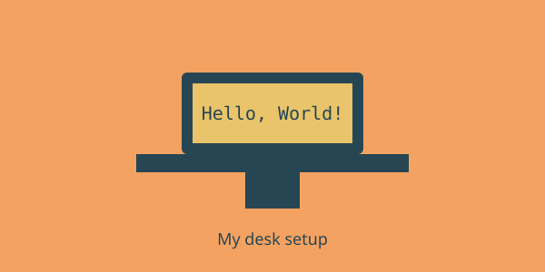

About This Website
Purpose of the Website
Code Corner is a place where I collect my student projects and share what I learn. I want to practice HTML5 and show how a simple website can be organized with semantic tags. Later I plan to add CSS and JavaScript to make it look better.
The website was started on .

Programs must be written for people to read, and only incidentally for machines to execute.
Frequently Asked Questions
Why is there no color or design?
This assignment must be written in HTML only, so there is no CSS or JavaScript.
Will the website change in the future?
Yes. I will add more projects and improve the design when I learn CSS.
Computer Engineering Department